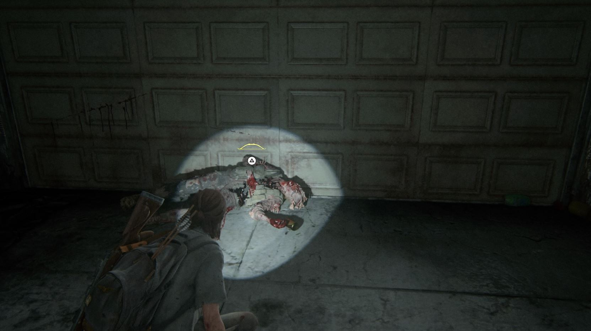
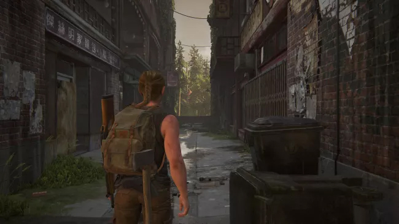
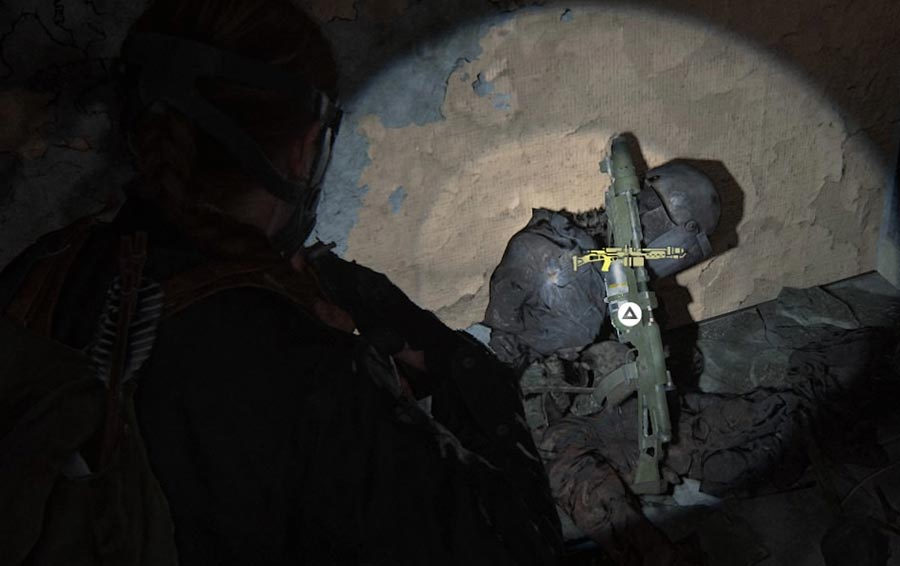

ARMAS
ALERTA:Espoiler,contem imagens sobre capitulos do jogo
localização das armas de THE LAST OF US 2
Dia 1 de Seattle – Shotgun, Downtown
Localização: Na área aberta do centro de Seattle, procure pelo Westlake Bank (Banco Westlake), localizado na esquina da James Street com a 6th Avenue.
Quando finalmente você entra em Seattle, o jogo te dá finitos lugares para serem conferidos lugares para visitar.
Quer encontrar a arma o rápido possível? basta ir ao Westlake Bank (só conferir o mapa para saber a localização).
Há um cofre de banco, e o código para abri-lo está em um cadáver próximo. Se não quer perder tempo na busca, basta
simplesmente digitar 602306 para entrar no cofre.
.jpg)
Quer encontrar a arma o rápido possível? basta ir ao Westlake Bank (só conferir o mapa para saber a localização).
Há um cofre de banco, e o código para abri-lo está em um cadáver próximo. Se não quer perder tempo na busca, basta
simplesmente digitar 602306 para entrar no cofre.
Dia 1 de Seattle – Granada de Flash
localização: A primeira Granada de Flash pode ser encontrada dentro da delegacia de polícia
Ainda no mesmo capítulo, agora no caminho da missão, quando você estiver tentando entrar no prédio da FEDRA, encontrará
uma escada do lado de fora em uma alcova, ao lado do portão. O manual da granada de flash pode ser encontrada quando chegar
ao fim da escada. Porém, se não a encontrar aqui (ou passar direto), também pode ser encontrada no tribunal, antes de entrar
na sala com o elevador.
uma escada do lado de fora em uma alcova, ao lado do portão. O manual da granada de flash pode ser encontrada quando chegar
ao fim da escada. Porém, se não a encontrar aqui (ou passar direto), também pode ser encontrada no tribunal, antes de entrar
na sala com o elevador.
Dia 1 de Seattle – Armadilha de Bomba, Capitol Hill
Localização: Você encontra a Armadilha de Bomba pela primeira vez dentro de uma casa vermelha, logo após Ellie passar pela área em que os Serafitas
Se você estiver explorando todo o mapa, será possível encontrar uma região com vários hotéis, será possível saber o lugar que abriga o item,
quando avistar uma lixeira. Podendo mover a lixeira, é possível explorar alguns apartamentos.
Ao vasculhar o local, o manual na cama. Se passar direto por ele, a receita ainda pode ser encontrada em uma bancada onde Ellie faz a manutenção das armas no dia 2 em Seattle.
quando avistar uma lixeira. Podendo mover a lixeira, é possível explorar alguns apartamentos.
Ao vasculhar o local, o manual na cama. Se passar direto por ele, a receita ainda pode ser encontrada em uma bancada onde Ellie faz a manutenção das armas no dia 2 em Seattle.
Dia 2 de Seattle – Arco, Hillcrest
Localização: Você encontra o Arco pela primeira vez durante a progressão natural da história em Hillcrest. Ele não pode ser perdido, pois faz parte de um encontro obrigatório.
Definitivamente uma das armas mais úteis em TLoU2 é o arco, se você busca abates silenciosos e com uma distância segura.
Será possível encontrá-lo com vagalumes remanescentes em todo o nível de Hillcrest, onde um dos vigilantes utiliza um
arco. Ao passar do capítulo, você o encontrará. No momento do combate ele está infectado. Depois de vencê-lo, o item é desbloqueado.

Será possível encontrá-lo com vagalumes remanescentes em todo o nível de Hillcrest, onde um dos vigilantes utiliza um
arco. Ao passar do capítulo, você o encontrará. No momento do combate ele está infectado. Depois de vencê-lo, o item é desbloqueado.
Dia 1 de Seattle – Pipe Pump, a pé (Abby)
localização: A Bomba de Cano é desbloqueada automaticamente durante a missão “A Pé”, enquanto Abby e Manny atravessam o armazém cheio de infectados.
Quando dentro de uma loja de ferragens, Manny informa que existem matérias para se criar uma bomba.
Basta pegá-los e você aprenderá a receita de criação do dispositivo explosivobr
Basta pegá-los e você aprenderá a receita de criação do dispositivo explosivobr
Dia 1 de Seattle – pistola de caça, a pé (Abby)
Localização: A Pistola de Caça é encontrada dentro de um cofre opcional, localizado durante a exploração do capítulo “A Pé” com Abby, logo após atravessar a área do posto de gasolina.
Após sair da oficina de barcos, você descerá do telhado e verá um prédio menor ao lado do maior. No menor será possível
encontrar uma nota confirmando um código seguro como “A Grande Vitória”, mas precisará anotar o bilhete de loteria na
parede para os próprios dígitos (17-38-07). Depois disso, entre no prédio maior do lado de fora, através de uma rachadura
que fica ao lado de algumas paletas. Use o cofre para pegar uma pistola de caça e você também encontrará outra moeda para a coleção de Abby.

encontrar uma nota confirmando um código seguro como “A Grande Vitória”, mas precisará anotar o bilhete de loteria na
parede para os próprios dígitos (17-38-07). Depois disso, entre no prédio maior do lado de fora, através de uma rachadura
que fica ao lado de algumas paletas. Use o cofre para pegar uma pistola de caça e você também encontrará outra moeda para a coleção de Abby.
Dia 1 de Seattle – espingarda de cano duplo, território hostil (Abby)
Localização: A Espingarda de Cano Duplo é encontrada durante a sequência obrigatória em que Abby invade um prédio controlado pela WLF, conhecido como Território Hostil.
Depois de chegar à rua da foto acima, a espingarda de cano duplo está dentro da loja de antiguidades à direita. Porém, para
se chegar a ela é necessário percorrer a loja chamada Ruby Dragon, localizada à esquerda. Suba as escadas, enfrente os dois
clickers antes de pular a rua. Após entrar na loja, terá de passar por um corredor. A espingarda estará atrás do balcão e quando
conseguir, dois corredores aparecerão para combate.

se chegar a ela é necessário percorrer a loja chamada Ruby Dragon, localizada à esquerda. Suba as escadas, enfrente os dois
clickers antes de pular a rua. Após entrar na loja, terá de passar por um corredor. A espingarda estará atrás do balcão e quando
conseguir, dois corredores aparecerão para combate.
Dia 1 de Seattle – Besta, Costa (Abby)
Localização: A Besta é obtida durante a sequência de exploração da área costeira do capítulo, enquanto Abby e Manny avançam pela zona de docas e cais destruídos.
Quando estiver em um navio e terá que percorrer vários salões. Em um momento, será solicitado que você abra uma porta que está emperrada.
Quando finalmente conseguir, verá que o bloqueio foi ocasionado por um corpo, e junto a ele está a besta.

Quando finalmente conseguir, verá que o bloqueio foi ocasionado por um corpo, e junto a ele está a besta.
Dia 1 em Seattle – Coldre de arma curta, território Hostil (Abby)
Localização: Coldre de Arma Curta é um item de melhoria que aumenta a capacidade de munição das pistolas de Abby e é encontrado durante a missão obrigatória no Território Hostil.
Logo depois de pegar a espingarda, quando chegar a van que é um
santuário para os serafitas, entre no prédio à direita imediatamente. Na sala dos fundos encontrará um coldre de arma comprido em uma mesa.

santuário para os serafitas, entre no prédio à direita imediatamente. Na sala dos fundos encontrará um coldre de arma comprido em uma mesa.
Dia 1 em Seattle – Coldre de arma longa, Costa (Abby)
Localização: lEle pode ser encontrado durante a exploração da área costeira, enquanto você avança pelos cais e docas destruídas.
Depois que Lev e Yara estejam seguros dos serafitas e infectados, siga pelo próximo prédio. Na sala você precisa subir para pular pela janela superior, você encontrará o Coldre.

Dia 2 de Seattle – lança-chamas, The Descent (Abby)
Localizção: O lança-chamas é obtido durante a missão The Descent, enquanto Abby explora os túneis e galerias subterrâneas controladas por WLF. Trata-se de um item obrigatório,

Uma das armas mais mortais do game será encontrada quando estiver descendo por um hotel degradado, após atravessar a Sky Bridge com Lev. Garantindo que ele tenha uma máscara de gás,
você pode encontrar o lança-chamas em um sofá na parte inferior do hotel, enquanto desce por ele. Há relatos que pode se encontrar o item em outros lugares.
você pode encontrar o lança-chamas em um sofá na parte inferior do hotel, enquanto desce por ele. Há relatos que pode se encontrar o item em outros lugares.